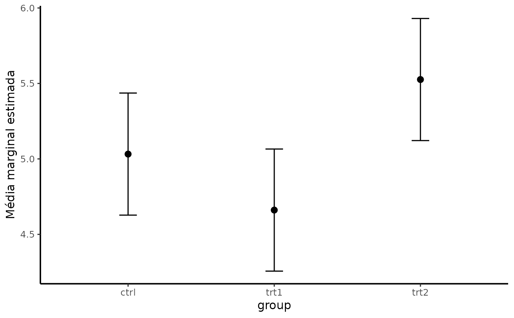
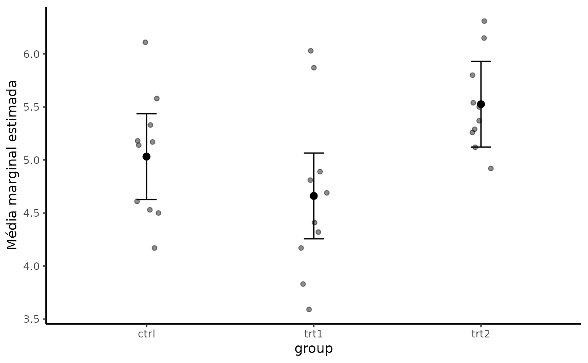
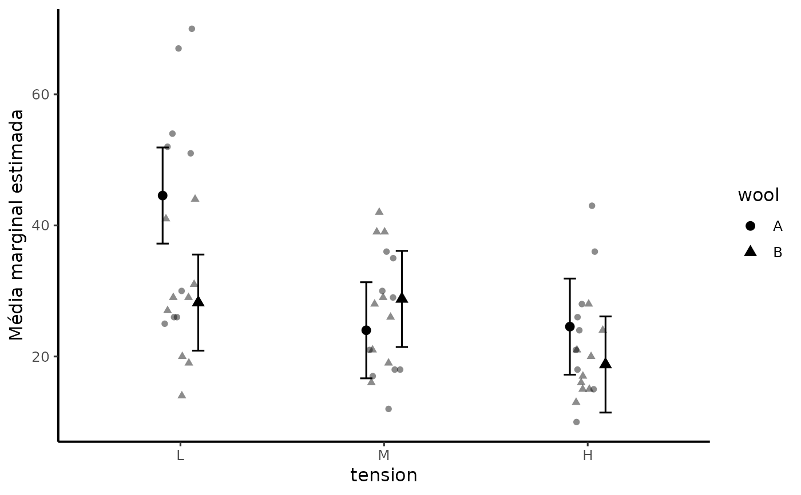

Gráfico de médias marginais estimadas com dados observados
plot_emmeans.RdCombina estimativas ajustadas, intervalos de confiança e, opcionalmente, observações individuais. O objetivo é evitar figuras que mostrem apenas uma barra de média sem informação de distribuição ou incerteza.
Usage
plot_emmeans(object,
data = NULL,
x = NULL,
y = NULL,
show_data = TRUE,
interval = "confidence",
letters = FALSE,
theme = theme_nogrid())Arguments
- object
Resultado de [comparar_emmeans()] ou objeto `emmGrid`.
- data
Banco original opcional.
- x
Variável do eixo x no banco original. Se `NULL`, é inferida das EMMs.
- y
Variável resposta no banco original.
- show_data
Mostrar observações individuais quando `data` é fornecido?
- interval
Tipo de intervalo. Atualmente `"confidence"` utiliza os limites fornecidos por `emmeans`.
- letters
Mostrar letras se `object` contiver CLD?
- theme
Tema `ggplot2` aplicado ao final.
Details
Consulte as vinhetas do pacote para interpretação, limitações e fluxos integrados. A função não deve substituir a avaliação do delineamento e da pergunta científica.
Examples
m <- stats::lm(weight ~ group, data = PlantGrowth)
cmp <- comparar_emmeans(m, ~ group)
plot_emmeans(cmp)

plot_emmeans(cmp, data = PlantGrowth, x = group, y = weight, show_data = TRUE)

m2 <- stats::lm(breaks ~ wool * tension, data = warpbreaks)
cmp2 <- comparar_emmeans(m2, ~ tension | wool)
plot_emmeans(cmp2, data = warpbreaks, x = tension, y = breaks)
